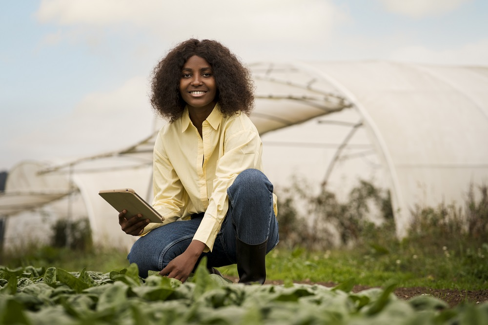
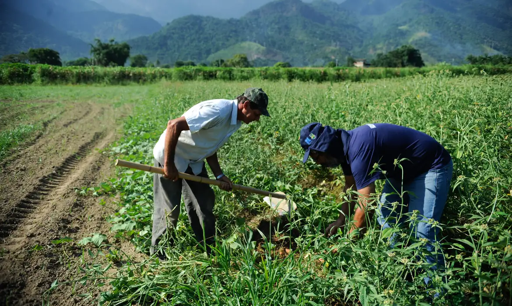
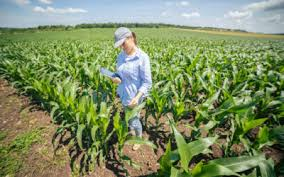
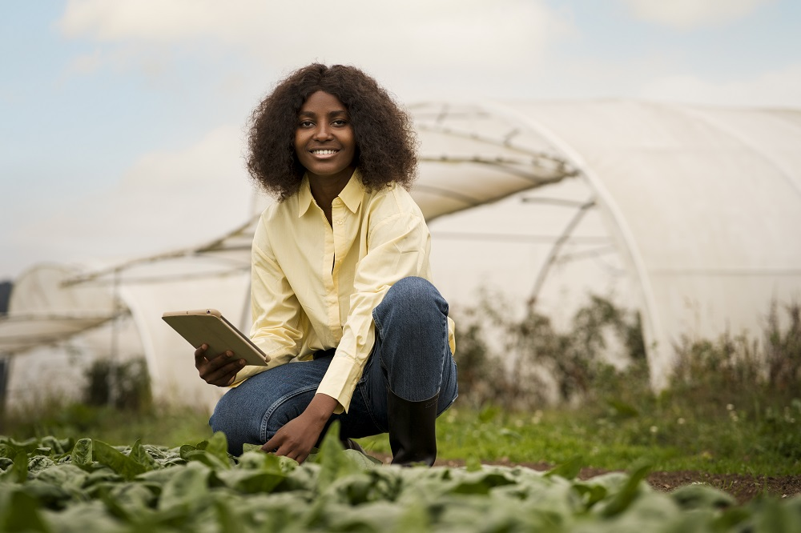
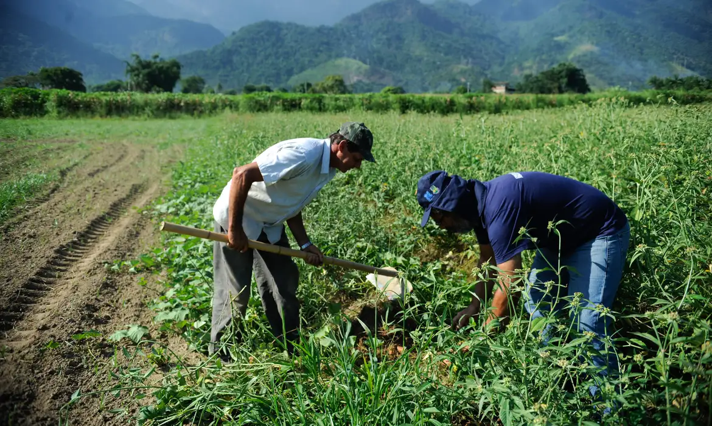
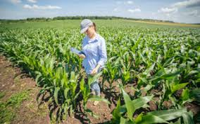

Bem-vindo ao nosso projeto!
Este site foi criado pelos alunos para o Concurso Agrinho, com o objetivo de valorizar o trabalho no campo e fortalecer os laços com a cidade por meio da educação e sustentabilidade.
Galeria de Imagens
Veja como o campo e a cidade se conectam de forma harmônica e produtiva:
 




